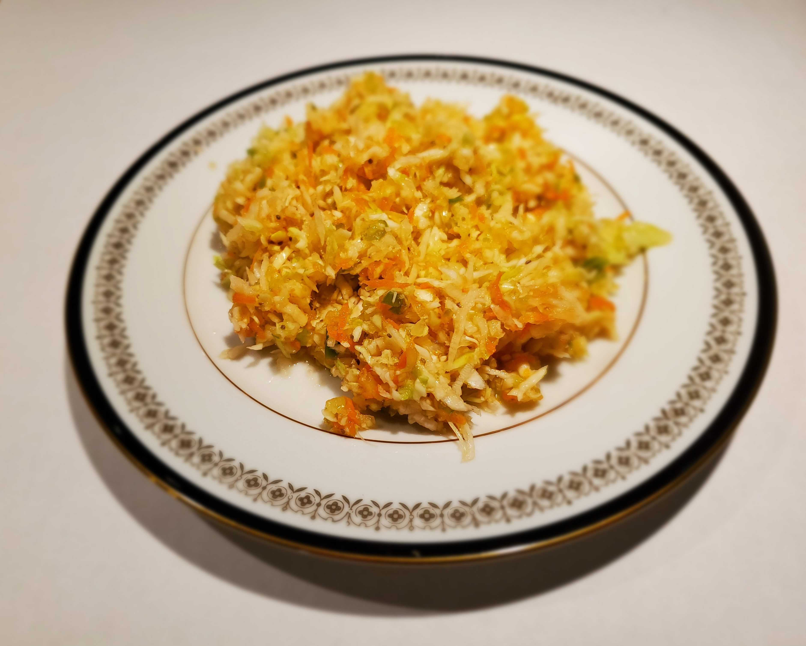

This is a recipe for "Hazel's Vinegar Based Cole Slaw"
Ingredients
- One 1 gal. glass jar with lid.
- 1 head of cabbage shredded.
- 2 carrots graded fine.
- 1 small onion chopped.
- 1/2 of a green pepper chopped.
- 1 cup of celery chopped (One 8 oz. package of celery sticks chopped).
Syrup Ingredients
- 2 cups of sugar.
- 1 tsp. of mustard seed.
- 1 tsp. of celery seed.
- 1 tbsp. of salt.
- 1 1/2 cups of white distilled vinegar.
Directions
- Put the shredded cabbage, graded carrots; and chopped onion, green pepper, and celery into the glass jar.
- Put the Syrup Ingredients into a 2 qt. saucepan, and bring to a boil. (Stir continuously to mix, and prevent boil-over.)
- Let the syrup simmer for 20 minutes.
- Remove the saucepan from the stove, and let cool some before pouring the syrup into the glass jar. Mix thoroughly, and put the glass jar into the refrigerator to marinate overnight.
- Enjoy. Keep refrigerated until eaten up.
Download Recipe